История НПП «ПУЛЬСАР»
АО «НПП «Пульсар» — лидер отечественной полупроводниковой электроники.
Основные направления деятельности предприятия — разработка нового
поколения электронной компонентной базы: полупроводниковых СВЧ, силовых,
фотоэлектронных и микроэлектронных приборов, выпуск радиоэлектронной
аппаратуры для информационных систем гражданского назначения. АО «НПП
«Пульсар» входит в состав холдинга «Росэлектроника», управляющей
компанией которого является Объединенная приборостроительная корпорация.
1953
АО «НПП «Пульсар» (ранее НИИ №35) основано
Постановлением Совета Министров СССР от 4 июня 1953
года №1402/563, приказом Министра электростанций и
электропромышленности от 9 июня 1953 года № 60 как
первый в СССР отраслевой НИИ электронной промышленности
для комплексного решения вопросов развития полупроводниковой
электроники.
 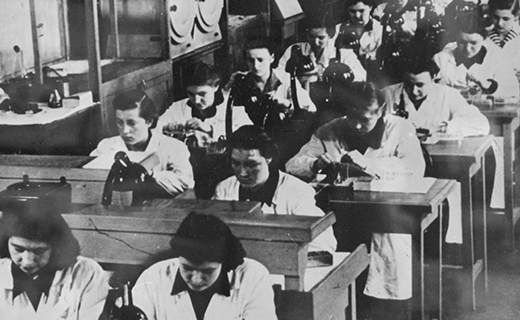
«Пульсар» первым взялся за разработку электронных наручных часов. Различные варианты их исполнения с индикацией на жидких кристаллах и светодиодах выпускались на заводе «Пульсар» и в дальнейшем переданы на освоение в г. Минск.
На «Пульсаре» разработаны первые отечественные промышленные образцы транзисторов и интегральных схем. Первый супергетеродинный приемник и радиосвязь с первым космическим спутником реализованы на транзисторах разработки и выпуска «Пульсара».
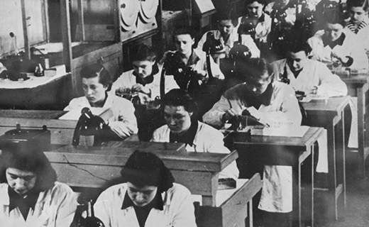
«Пульсар» первым взялся за разработку электронных наручных часов. Различные варианты их исполнения с индикацией на жидких кристаллах и светодиодах выпускались на заводе «Пульсар» и в дальнейшем переданы на освоение в г. Минск.
На «Пульсаре» разработаны первые отечественные промышленные образцы транзисторов и интегральных схем. Первый супергетеродинный приемник и радиосвязь с первым космическим спутником реализованы на транзисторах разработки и выпуска «Пульсара».
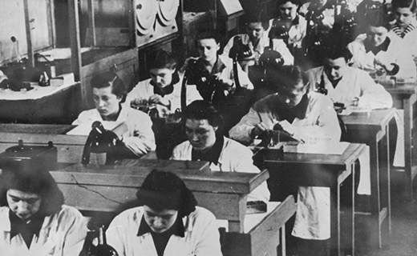
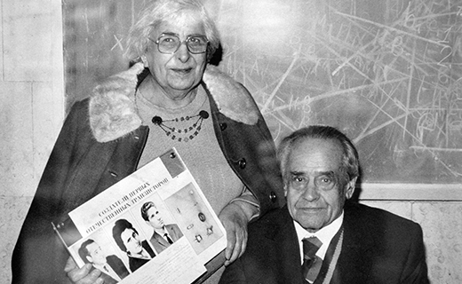
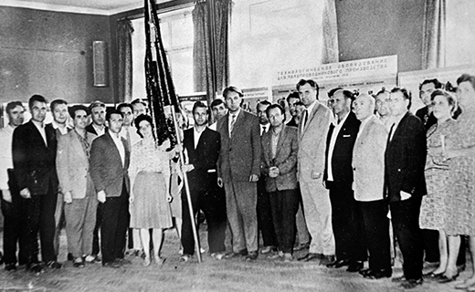
1957
На предприятии действует аспирантура по подготовке научных кадров по программам послевузовского профессионального образования и аттестации научных кадров высшей квалификации.
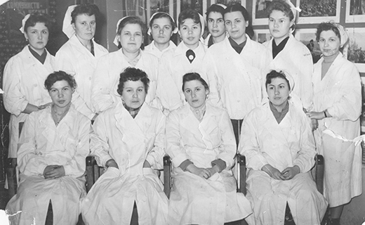
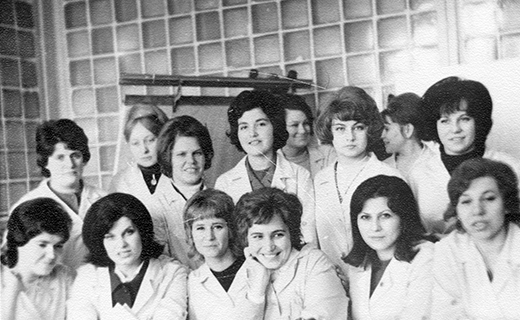
1968
На предприятии действует аспирантура по подготовке научных кадров по программам послевузовского профессионального образования и аттестации научных кадров высшей квалификации.
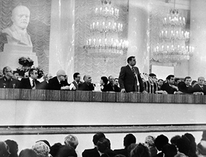
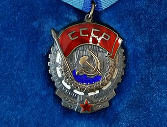
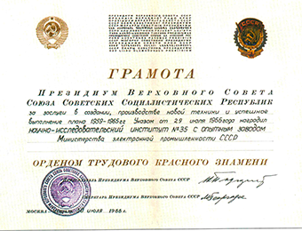
1970
Базовая кафедра Московского института радиотехники, электроники, автоматики (МИРЭА) при НИИ «Пульсар» была организована 26 ноября 1970 года в соответствии с приказом по МИРЭА №80 от 26 ноября 1970 года. Она являлась первой базовой кафедрой на факультете электронной и оптоэлектронной техники МИРЭА. На сегодняшний день Базовая кафедра твердотельной электроники МГТУ МИРЭА работает уже более 40 лет.
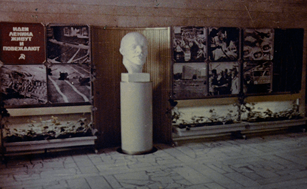
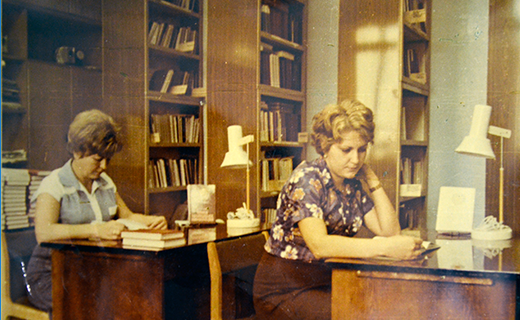
1973-1975
В 1973–1975 годах на предприятии начинает развиваться новое направление полупроводниковой электроники — фотоэлектроника на приборах с зарядовой связью.
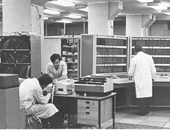
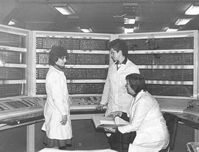
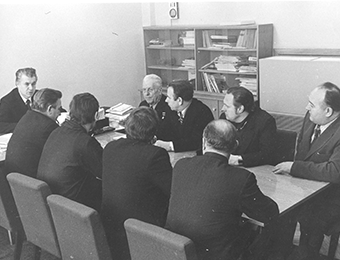
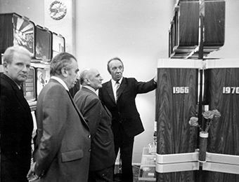
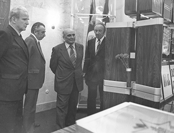
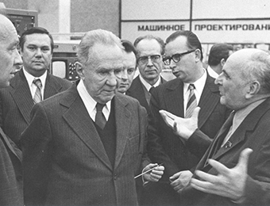
1984
За большой вклад в развитие отечественной электронной техники предприятие награждено орденом Ленина.
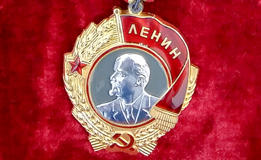
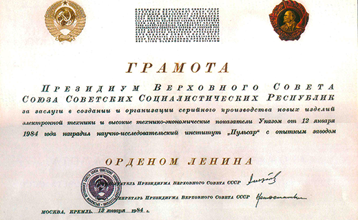
1990
С 1990 г. работает Докторский диссертационный совет при открытом акционерном обществе «Научно-производственное предприятие «Пульсар».
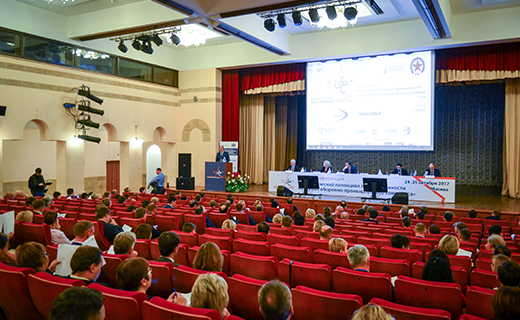
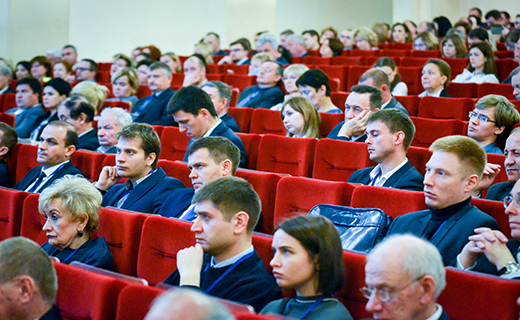
Научная школа «Пульсара» — это 5 «Заслуженных деятелей науки», более 60 докторов и кандидатов наук, сотни разработчиков, конструкторов и технологов высокого уровня. Более 20 сотрудников предприятия удостоены звания Лауреатов Ленинской и Государственных премий СССР и Российской Федерации.
2007-2019
С 1990 г. работает Докторский диссертационный совет при открытом акционерном обществе «Научно-производственное предприятие «Пульсар».
Научная школа «Пульсара» — это 5 «Заслуженных деятелей науки», более 60 докторов и кандидатов наук, сотни разработчиков, конструкторов и технологов высокого уровня. Более 20 сотрудников предприятия удостоены звания Лауреатов Ленинской и Государственных премий СССР и Российской Федерации.